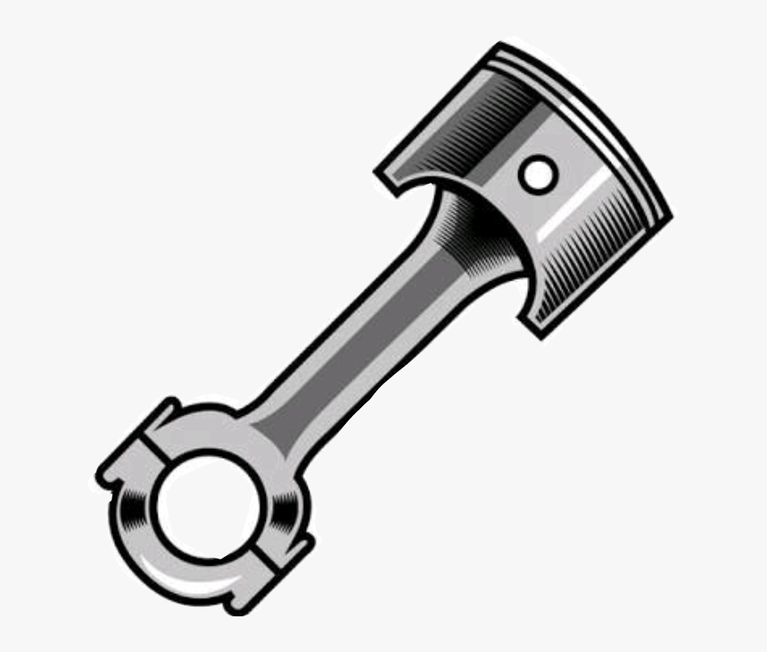
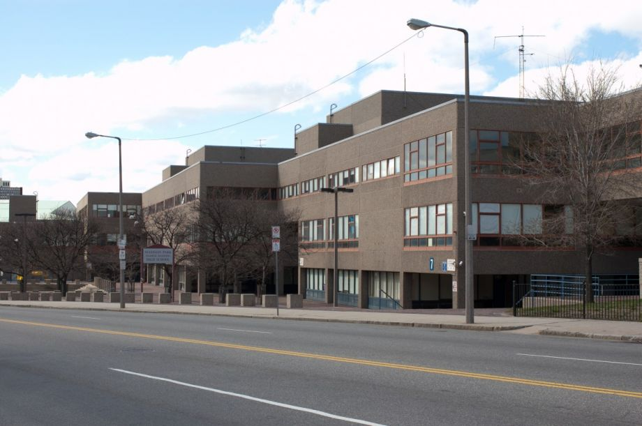
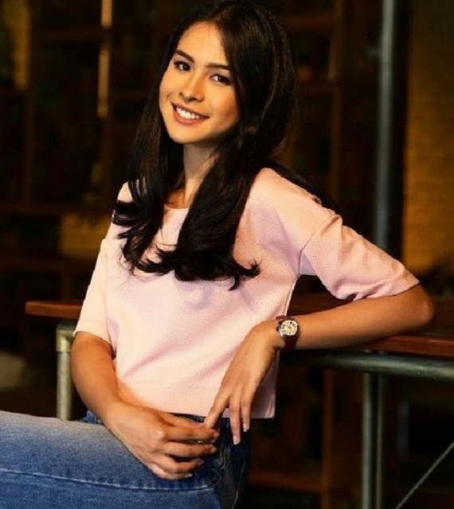
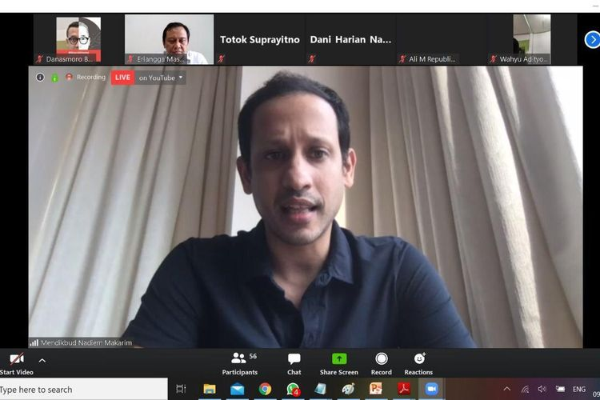
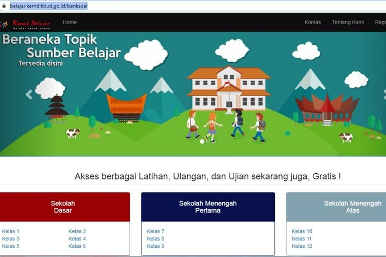

Visi
Terwujudnya peserta didik yang berakhlak dan berotak
Misi
- Melaksanakan pembinaan akhlak kepada siswa siswi
- Membentuk siswa siswi menjadi pribadi yang sopan dan santuy
- Menjadikan seluruh siswa siswi menjadi pribadi yang berotak bersih
KOMPETENSI KEAHLIAN
Berikut ini adalah uraian singkat Jurusan di SMK Sopan Santuy

Teknik Sepeda Motor
Teknik otomotif adalah salah satu cabang ilmu teknik mesin yang mempelajari tentang bagaimana merancang, membuat dan mengembangkan alat-alat transportasi darat yang menggunakan mesin, terutama sepeda motor, mobil, bis dan truk.
Teknik Elektronika
Teknik Elektronika adalah bidang teknik yang mempelajari tentang komponen listrik dan peralatan-peralatan semi konduktor. Teknik Elektronika merupakan bagian dari Teknik Listrik (Teknik Elektro).
Teknik Instalasi Tenaga Listrik
Teknik Listrik (Teknik Elektro) adalah salah satu bidang ilmu teknik mengenai aplikasi listrik untuk memenuhi kebutuhan daya listrik dalam skala besar seperti pada industri dan mesin-mesin.
Teknik Pemesinan
Teknik mesin atau Teknik mekanik adalah ilmu teknik mengenai aplikasi dari prinsip fisika untuk analisis, desain, manufaktur dan pemeliharaan sebuah sistem mekanik. Ilmu ini membutuhkan pengertian mendalam atas konsep utama dari cabang ilmu mekanika, kinematika, teknik material, termodinamika dan energi.
Teknik Kendaraan Ringan
Teknik Kendaraan Ringan adalah ilmu yang mempelajari tentang alat-alat transportasi darat yang menggunakan mesin, terutama mobil yang mulai berkembang sebagai cabang ilmu seiring dengan diciptakannya mesin mobil.
Akomodasi Perhotelan
jurusan akomodasi perhotelan. Yang dimaksud dengan akomodasi adalah sarana untuk menyediakan jasa pelayanan penginapan yang dapat dilengkapi dengan pelayanan makan dan minum serta jasa lainnya.

STRUKTUR ORGANISASI
Struktur organisasi di SMK Sopan Santuy
Rafi Alwan Setyawan
KEPALA SEKOLAH
menjabat kepala sekolah
Acha Septriasa
WAKA KURIKULUM
Menjabat wakil kepala sekolah kurikulum
Anya Geraldine
WAKA KESISWAAN
menjabat wakil kepala sekolah kesiswaan
Chelsea Islan
WAKA HUMAS
menjabat wakil kepala sekolah humas

Maudy Ayunda
WAKA SARANA PRASARANA
menjabat wakil kepala sekolah sarana prasarana
BERITA TERBARU
Menyajikan informasi terupdate di SMK Sopan Santuy

BERITA TERBARU
Mendikbud Nadiem: Mulai Senin Siswa Bisa Belajar dari Rumah lewat TVRI
KOMPAS.com - Mengatasi keterbatasan akses jaringan internet dan juga bahan pembelajaran daring selama wabah Covid-19, Mendikbud Nadiem Makarim menggandeng TVRI menginisiasi program " Belajar dari Rumah".
READ MORE...
BERITA TERBARU
Mendikbud Nadiem: Guru dan Siswa Bisa Beli Kuota Internet Pakai Dana BOS
KOMPAS.com - Menteri Pendidikan dan Kebudayaan (Mendikbud), Nadiem Makarim menyebutkan Dana Bantuan Operasional Sekolah (BOS) bisa digunakan guru dan murid untuk membeli kuota internet dalam rangka mendukung belajar dari rumah.
READ MORE...

BERITA TERBARU
Jadwal Kelas "Online" 9 April untuk SD Hingga SMA, Plus UTBK
KOMPAS.com - Sejumlah portal pendidikan kini menghadirkan sesi kelas daring (online) yang bisa diakses gratis oleh murid, orangtua dan guru selama masa pembelajaran jarak jauh terkait pandemi Covid-19.
READ MORE...